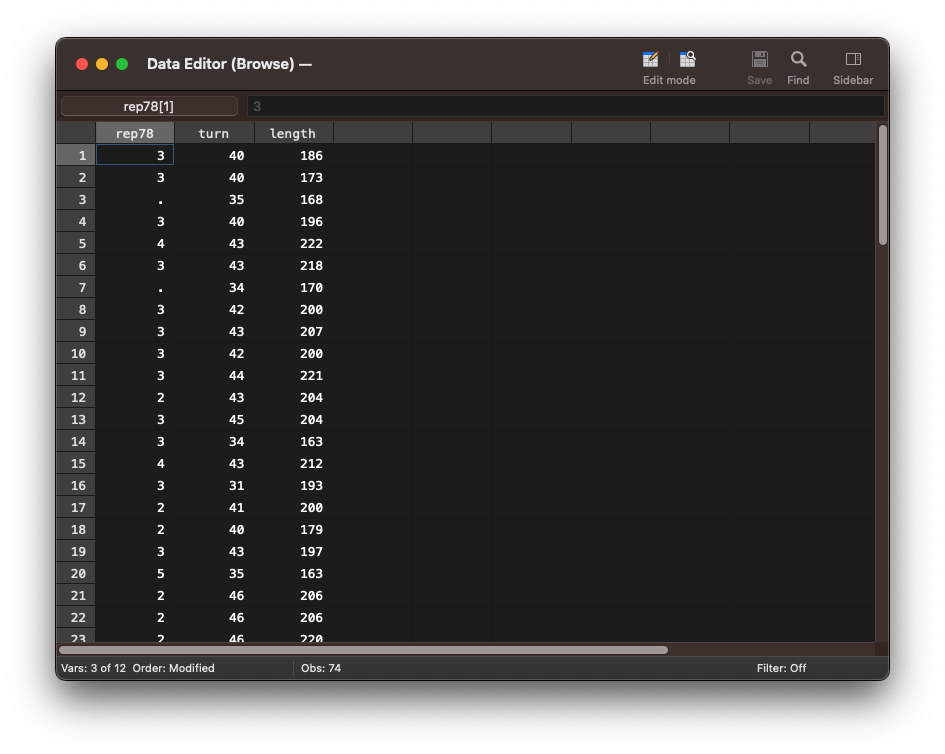
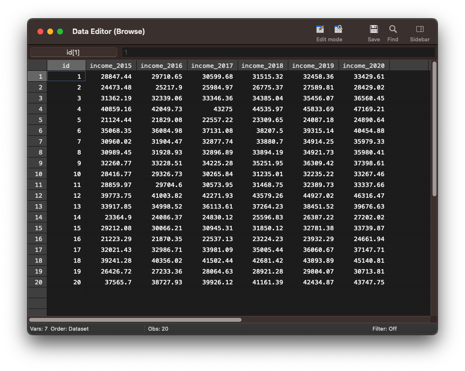

On this page
📋 Starting your session: confidence check
Once your workshop session has started, please complete this short questionnaire before beginning your first project during the workshop you attend today. It helps us understand how confident you feel before the session.
Open the starting confidence check ↗DIGITAL SKILLS LAB · STATA
Stata Fundamentals 4: Macros and For loops
A practical guide to using macros and for loops to automate repetitive tasks in Stata.
About this session
Macros and for loops are an essential tool in Stata that help you write more efficiently by reducing the total number of commands in your scripts. Another main benefit is that they make your scripts more readable and less susceptible to errors.
In this practical session, you will learn to:
- use local macros to store and retrieve values.
- use foreach to loop over a set of variables
- apply foreach loops to create multiple plots and new variables
- use forvalues to loop over a series of numbers
- apply forvalues loops to select variables based on numerical suffix
More information on how the session is run
How to work together in the Zoom sessions:- Please turn on your microphone and webcam.
- One shares the screen and the other requests remote control.
- Take turns on who types for each exercise.
- Ask the trainer if you struggle to find a solution.
- Use the help command. To get help with a specific command type help "command name"
- Search online. The statalist.org forum is usually the most useful resource.
Macros
Macros are very similar to a variable in programming and allow you to store information and retrieve that information at multiple places throughout your do-file. The most common use of macros are as a placeholder for a number of variables or for instance a file path as we will illustrate below.
There are two different types of macros:
Local macros only exist in the local memory of the do file in which they were created. You cannot access them from another do-file or from the command pane. Global macros exist inside the global memory of Stata and can be accessed and altered outside of the do-file in which they were created. For most purposes, global macros are not necessary and since having a macro available across scripts can introduce problems, we will focus on local macros in this tutorial.
All macros are deleted from memory when you close Stata.
Local macros
In the example below we load the auto dataset and want to run the describe, browse and summarize command on the rep78, turn and length variables.
. sysuse auto, clear
(1978 Automobile Data)
. describe rep78 turn length
storage display value
variable name type format label variable label
----------------------------------------------------------------------------------------------------------------------------------------------------------------------------------------------------------------------------------------------------------
rep78 int %8.0g Repair Record 1978
turn int %8.0g Turn Circle (ft.)
length int %8.0g Length (in.)
. browse rep78 turn length

. summarize rep78 turn length
Variable | Obs Mean Std. Dev. Min Max
-------------+---------------------------------------------------------
rep78 | 69 3.405797 .9899323 1 5
turn | 74 39.64865 4.399354 31 51
length | 74 187.9324 22.26634 142 233
We now modify the script and use a local macro to store the variables rep78, turn and length. In the subsequent lines, where we use the describe, browse and summarize commands, we now substitute the local macro with the variable names.
Following local, we first specify the name of the local macro as vars and then enter all variables that should be assigned to the macro.
. sysuse auto, clear
(1978 Automobile Data)
. local vars rep78 turn length
We can now use the local macro vars anywhere inside our do-file as a placeholder for the variables rep78, turn and length. In order to use the vars macro with a command, we have to put it in single quotes as in the example. NB: the first single quote is the forward slanted single quote `.
. describe `vars'
storage display value
variable name type format label variable label
----------------------------------------------------------------------------------------------------------------------------------------------------------------------------------------------------------------------------------------------------------
rep78 int %8.0g Repair Record 1978
turn int %8.0g Turn Circle (ft.)
length int %8.0g Length (in.)
. browse `vars'
. summarize `vars'
Variable | Obs Mean Std. Dev. Min Max
-------------+---------------------------------------------------------
rep78 | 69 3.405797 .9899323 1 5
turn | 74 39.64865 4.399354 31 51
length | 74 187.9324 22.26634 142 233
Global macros
See the example below to create a global macro instead of a local one. We use global instead of local to create the macro. In order to use the macro, we have to prefix it with the $ symbol.
It is recommended to use local macros unless you must use a variable across do-files. Using global macros where it is not necessary can cause conflicts when working across do-files. For instance, you might use the same name for global macros in different do-files. Running sub-sections of the different do-files might cause errors when using global macros because the value that has been assigned to the macro in one do-file, would not work with the commands in another do-file.
. sysuse auto, clear
(1978 Automobile Data)
. global vars rep78 turn length
. describe $vars
storage display value
variable name type format label variable label
----------------------------------------------------------------------------------------------------------------------------------------------------------------------------------------------------------------------------------------------------------
rep78 int %8.0g Repair Record 1978
turn int %8.0g Turn Circle (ft.)
length int %8.0g Length (in.)
. browse $vars
. summarize $vars
Variable | Obs Mean Std. Dev. Min Max
-------------+---------------------------------------------------------
rep78 | 69 3.405797 .9899323 1 5
turn | 74 39.64865 4.399354 31 51
length | 74 187.9324 22.26634 142 233
Why bother using macros?
Having a macro for a set of variables might come in very handy when, for instance, running a number of regression analysis with the same set of predictors or different predictors but the same set of control variables. If you remove or add a variable in the macro it will take effect in every analysis that uses the macro. You only have to change the macro at the beginning of the analyses and not every set of predictors inside each regression command. More importantly, you will have to use macros when running for loops in your script, which we will explore in the next section.
Exercise 1: Local macros
- Load the auto dataset.
- Create a local macro with the name variables and assign to it the variables weight, length and price.
- Run the summarize and describe command using the variables macro.
- Try to run the codebook command using the variables macro in the command command pane. What happens?
For loops
For loops are a tool that you might not use that often, but which can save you a lot of lines of writing repetitive commands.
A for loop is used to iterate through a sequence of variables, numbers or strings. On each iteration the commands inside the for loop will be carried out with the currently selected element from the sequence of variables, numbers or strings. The main reason for using for loops is to make your code more readable and to save keystrokes.
As an example, to rename 10 variables you need 10 different rename commands, that is 10 lines of code. With a for loop you could rename the same 10 variables in two lines.
Using a for loop to create codebooks for a set of variables
For this exercise we will use the auto dataset and we start with loading it from the Stata server.
. webuse auto, clear
(1978 Automobile Data)
We will now write a for loop with the foreach command, that will use the codebook command on a set of variables in the auto dataset. We could have done this by simply using the codebook command with all variable names, but this is just an example to illustrate how you create for loops with foreach.
Let us first run these two lines and see how they produce a codebook for the variables price, make and weight.
. foreach var of varlist price make weight{
codebook `var'
}
----------------------------------------------------------------------------------------------------------------------------------------------------------------------------------------------------------------------------------------------------------
price Price
----------------------------------------------------------------------------------------------------------------------------------------------------------------------------------------------------------------------------------------------------------
type: numeric (int)
range: [3291,15906] units: 1
unique values: 74 missing .: 0/74
mean: 6165.26
std. dev: 2949.5
percentiles: 10% 25% 50% 75% 90%
3895 4195 5006.5 6342 11385
----------------------------------------------------------------------------------------------------------------------------------------------------------------------------------------------------------------------------------------------------------
make Make and Model
----------------------------------------------------------------------------------------------------------------------------------------------------------------------------------------------------------------------------------------------------------
type: string (str18), but longest is str17
unique values: 74 missing "": 0/74
examples: "Cad. Deville"
"Dodge Magnum"
"Merc. XR-7"
"Pont. Catalina"
warning: variable has embedded blanks
----------------------------------------------------------------------------------------------------------------------------------------------------------------------------------------------------------------------------------------------------------
weight Weight (lbs.)
----------------------------------------------------------------------------------------------------------------------------------------------------------------------------------------------------------------------------------------------------------
type: numeric (int)
range: [1760,4840] units: 10
unique values: 64 missing .: 0/74
mean: 3019.46
std. dev: 777.194
percentiles: 10% 25% 50% 75% 90%
2020 2240 3190 3600 4060
. foreach var of varlist price make weight{
codebook `var'
}
Let us break down how the foreach command works. The foreach command takes two arguments: the list of variables, which is specified after of varlist and the name of the local macro, that is being used to store the variables, just after foreach.
After of varlist we give a list of variables that we want to select one by one. Everytime a variable from the list is selected is has to be stored in the local macro, so that we can use that variable for the codebook command inside the for loop. In this example, we named that macro var.
Each time a variable is selected it will therefore be assigned to the local macro var and then the codebook command will be run using the var macro. Inside the codebook command var will be replaced with the variable that var is currently holding.
On the first iteration, foreach selects the variable price and assigns it to the local macro var. Then the codebook command will be run with the macro var, which holds the variable price, and will create a codebook for the variable price.
On the second iteration, foreach selects the variable make and assigns it to the local macro var. Then the codebook command will be run with the macro var and a codebook for make will be printed in the results pane.
On the third iteration, foreach selects the variable weight and assigns it to the local macro var. Then the codebook command will be run with the macro var and a codebook for the variable weight will be printed.
Using a for loop to create graphs for a set of variables
Let us now look at another example of how we can use a for loop to create several histograms.
We can use the hist command to create a histogram. As you can see this command per default produces a histogram with a density scale, which you could change with the frequency option.
. hist price
(bin=8, start=3291, width=1576.875)

If we had a large number of histograms we wanted to plot, we could also use foreach to create all histograms in separate windows with a for loop.
As you can see, we have to use the local macro var to create the histogram with the hist command and to provide a name with the name option, so that the histograms will be created in separate windows.
set autotabgraphs on
. foreach var of varlist price weight length{
hist `var', name(hist_`var')
}
set autotabgraphs off
(bin=8, start=3291, width=1576.875)
(bin=8, start=1760, width=385)
(bin=8, start=142, width=11.375)

Exercise 2: foreach loop
- Load auto dataset
- Write a for loop to display summary statistics (mean and standard deviation) for the variables price, weight and length.
- Write a for loop to create three separate scatter plots to predict price from weight, length and trunk. Use the name option to create each plot in a separate window.
Generating new variables with a for loop
In the next example we will explore how we can apply a for loop to compute a set of variables more efficiently.
We will first load the income.csv dataset, which we import with a URL. The URL has to be preceded by using.
. import delimited using "https://raw.githubusercontent.com/mwiemers/datasets/main/income.csv", varnames(1) clear
(7 vars, 20 obs)
We view the data in the data editor panel with the browse command to take a closer look at the data.
We can see that the dataset has 20 entries on income for the years 2015 to 2020.
. browse
For our net income computation, we assume that there is tax free amount of £10000 and of the remaining income 40% are taxed.
We are now going to create new variables for the income after taxes. To do so, we use the generate command.
Following generate we specify the name of the newly computed variable and after the equal sign we write our expression to calculate the net income.
. generate net_income_2015 = 10000 + (income_2015-10000)*.6
. generate net_income_2016 = 10000 + (income_2016-10000)*.6
. generate net_income_2017 = 10000 + (income_2017-10000)*.6
. generate net_income_2018 = 10000 + (income_2018-10000)*.6
. generate net_income_2019 = 10000 + (income_2019-10000)*.6
. generate net_income_2020 = 10000 + (income_2020-10000)*.6
All of the generate commands have the same format. The only part that changes is the variable name. Therefore, we can use foreach to loop through all income variables and replace the income variables in the generate commands with a local macro.
Exercise 3: Generating new variables with a for loop
- Load the income.csv dataset using the URL https://raw.githubusercontent.com/mwiemers/datasets/main/income.csv
- Write a for loop to generate the variables net_income_2015 - net_income_2020. Calculate the net income with a 30% tax rate.
- Write a for loop to rename the original income variables to gross_income_2015, gross_income_2016 etc.
- Verify that the variables have been renamed by using the describe command with the fullname option.
📋 Leaving your session: confidence check
Please complete this short questionnaire just before you leave the workshop session. It helps us understand how confident you feel after the session. Continuing to another project in this session? Skip this questionnaire and complete the ending questionnaire only before leaving.
Open the leaving confidence check ↗